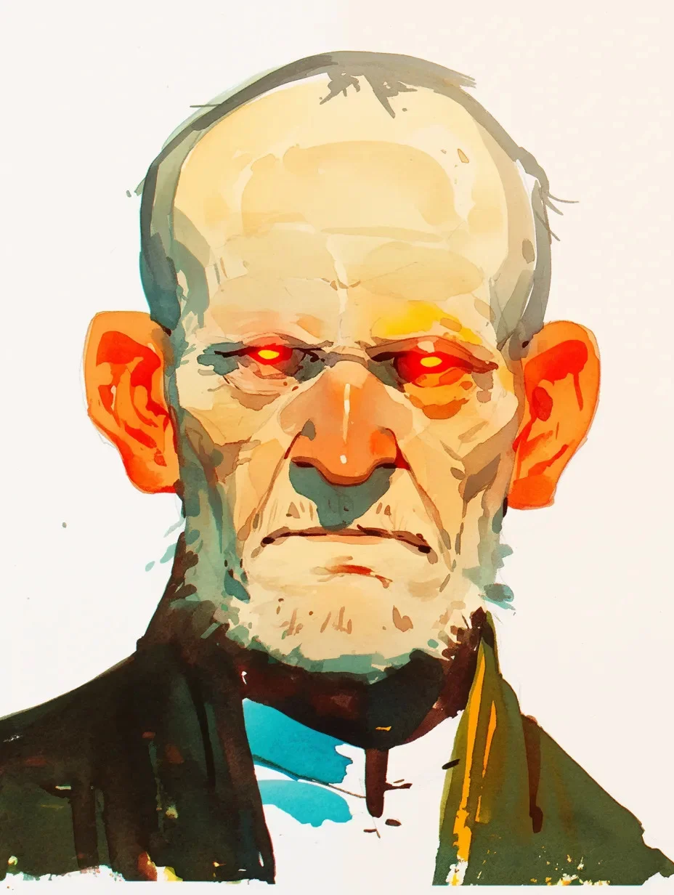

그 방에는 바닥과 네 개의 벽이 있었고 그게 전부였다. 문지방에는 한 줄기 검은 먼지가 흐트러짐 없이 놓여 있었으니, 넘어설 수 없는 경계선이었다. 나는 그 선을 넘어섰고, 안의 공기는 달랐다. 정지해 있었다. 죽어 있었다. 더 무거웠다.
[The room had a floor and four walls and that was all. At the threshold, a line of black dust lay undisturbed, a border that could not be crossed. I had stepped over it, and the air inside was different. Still. Dead. Heavier.]
그는 아무 장식 없는 평범한 나무 탁자 뒤에 앉아 있었다. 나무는 빛이 바래 있었고, 무언가가 시간을 새기는 것 말고는 할 일이 없을 때나 낼 법한 그런 흔적들로 상처투성이였다. 그는 그의 탁자와 의자 주위 마룻바닥에 새겨진, 똑같은 검은 먼지로 만들어진 원 안에 갇혀 있었다. 짐승이 아닌 것을 위한 우리였다. 나는 그가 그곳을 떠날 수 없다는 것을 알았지만, 그 앎이 내 갈비뼈 안에서 울리는 심장 박동을 잠재우지는 못했다.
[He sat behind a plain wooden table. The wood was pale and scarred with the kind of marks a thing makes when it has nothing to do but mark the time. He was contained within a circle of the same black dust, etched into the floorboards around his table and chair. A cage for a thing that was not an animal. I knew he could not leave it, and yet the knowing did nothing to calm the beat of my own heart against my ribs.]
그의 두 손은 탁자 위에 겹쳐 놓여 있었는데, 그 피부는 뼈 위에 팽팽하게 당겨진 오래된 종이 같았다. 그의 두피는 닳아빠진 돌처럼 희미한 빛을 내며 번들거렸다. 그림들은 그 눈을 제대로 담아내지 못했다. 그 눈은 종말이었다. 그의 잿빛 얼굴이라는 풍경 속에 박힌 두 개의 뜨거운 광점, 그것의 두개골 안에 갇혀 깜박이지 않는 열기였다.
[His hands rested on the tabletop, one over the other, the skin of them like old paper pulled over bone. His scalp shone with the faint gleam of a worn stone. The drawings could not get the eyes right. They were endings. Two hot points of light in the gray landscape of his face, a heat that did not flicker, trapped in its own skull.]
내 외투 주머니 속 쇠의 무게가 허벅지에 차가운 확신처럼 닿았다. 하지만 먼저, 말이 우선이었다. 해야만 하는 말들이었다.
[The weight of the iron in my coat pocket was a cold certainty against my thigh. But first, the words. They had to be said.]
“왜 하필 아이들이었나?” 죽은 공기 속에서 내 목소리는 가늘게 들렸다.
[“Why the children?” I asked. My voice sounded thin in the dead air.]
뒤이은 침묵은 댐에 쌓이는 압력 같았다. 그는 몸을 앞으로 숙였지만, 마치 유리 벽에 부딪힌 듯 갑작스럽게 그 움직임이 멈췄다. 그의 입꼬리가 당겨졌다. 미소가 아니었다.
[The silence that followed was a pressure building against a dam. He leaned forward, but his movement stopped short, a sudden halt as if he’d met a wall of glass. The corner of his mouth hitched. It was not a smile.]
그가 입을 열었을 때, 그의 목소리는 마른 우물 바닥에서 돌들이 서로 갈리는 소리 같았다.
[When he spoke, his voice was the sound of stones grinding together at the bottom of a dry well.]
“연습.”
[“Practice.”]
그 단어가 우리 사이에 걸려 있었다. 단순하고도 광활하게. 쇠붙이 근처에 있던 내 손이 옆으로 떨어졌다. “무엇을 위한 연습이지?”
[The word hung between us. Simple and vast. My hand, which had been near the iron, fell to my side. “Practice for what?”]
“위대한 고요,” 그의 잿불 같은 눈이 내게 고정된 채 말했다. “모든 작은 소음들이 사라졌을 때. 판이 깨끗해졌을 때.”
[“The great quiet,” he said, the embers of his eyes fixed on mine. “When all the little noises are gone. When the slate is clean.”]
그의 논리는 질병이었다. 생기 없고, 완벽한 공허. 나는 방앗간 주인의 딸을 떠올렸다. 그녀가 늘 머리에 매던 노란 리본을 떠올렸다. 개울가 근처 가시덤불에 걸린 채 발견되었던 바로 그 리본을.
[His reasoning was a disease. A sterile, perfect void. I thought of the miller’s daughter. I thought of the yellow ribbon she always wore in her hair. The one they found snagged on a thornbush near the creek bed.]
“서쪽 들판의 소녀 말이다,” 내 목소리는 낮고 단단했다. “기억하겠지. 그 리본.”
[“The girl from the west field,” I said, my voice low and hard. “You remember her. The ribbon.”]
그는 잠시 침묵했다. 기억을 더듬는 것이 아니라, 마치 그 개념 자체가 생소한 것처럼. 그가 구사하지 못하는 언어인 것처럼.
[He was silent for a moment. Not as if searching his memory, but as if the concept was foreign. A language he did not speak.]
“나는 실들을 본다,” 마침내 그가 말했다. 그의 어조는 악의도, 희열도 없이 무미건조했다. 그저 사실을 진술할 뿐이었다. “사물의 색은 중요하지 않다. 모양도 중요하지 않다. 실은 실일 뿐. 잡아당기면, 그 매듭이 풀린다.”
[“I see the threads,” he said finally, his tone flat, without malice or glee. Just a statement of fact. “The color of a thing does not matter. The shape does not matter. A string is a string. You pull it, and the knot of it unravels.”]
그는 노란 리본을 맨 소녀를 보고도 그저 잡아당겨야 할 실 하나로만 보았던 것이다. 질문은 끝났다. 그 안에는 설득할 영혼도, 호소할 마음도 없었다. 오직 끔찍하고, 끈기 있는 정돈만이 있을 뿐이었다.
[He saw a girl with a yellow ribbon and saw only a thread to be pulled. The questions were done. There was no soul in there to reason with, no heart to appeal to. Only a terrible, patient tidiness.]
나는 바닥의 쓸모없는 먼지 원에서 의자 위의 쓸모없는 몸으로 시선을 옮겼다. 내 손은 다시 외투로 향했고, 이번에는 망설이지 않았다. 쇠의 차가운 무게가 세상에 남은 유일한 진실처럼 느껴졌다.
[I looked from the useless circle of dust on the floor to the useless body in the chair. My hand went back to my coat, and this time, it did not falter. The cold weight of the iron felt like the only true thing left in the world.]